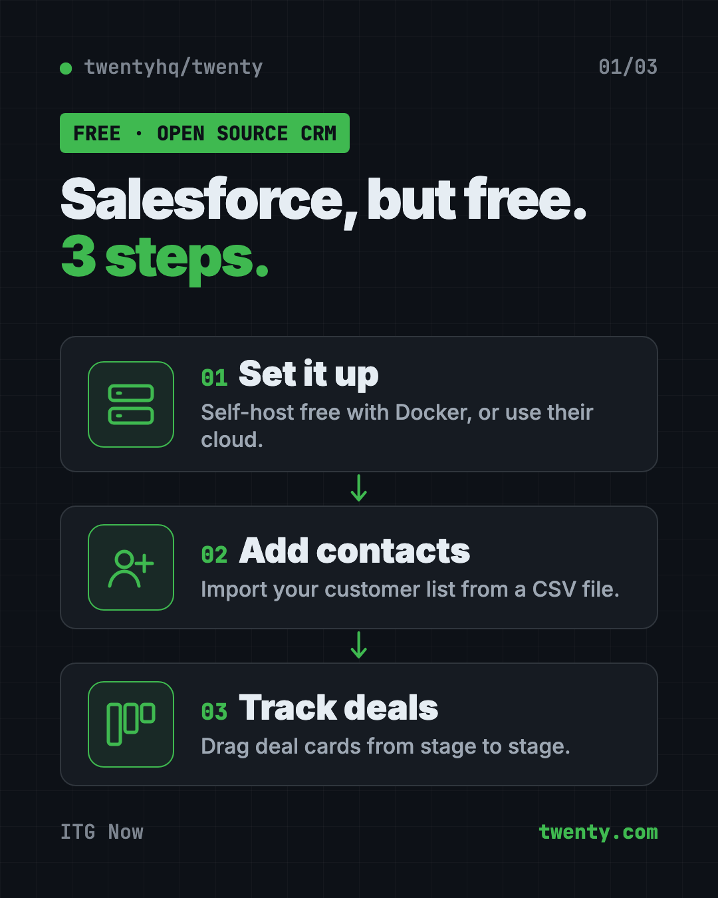
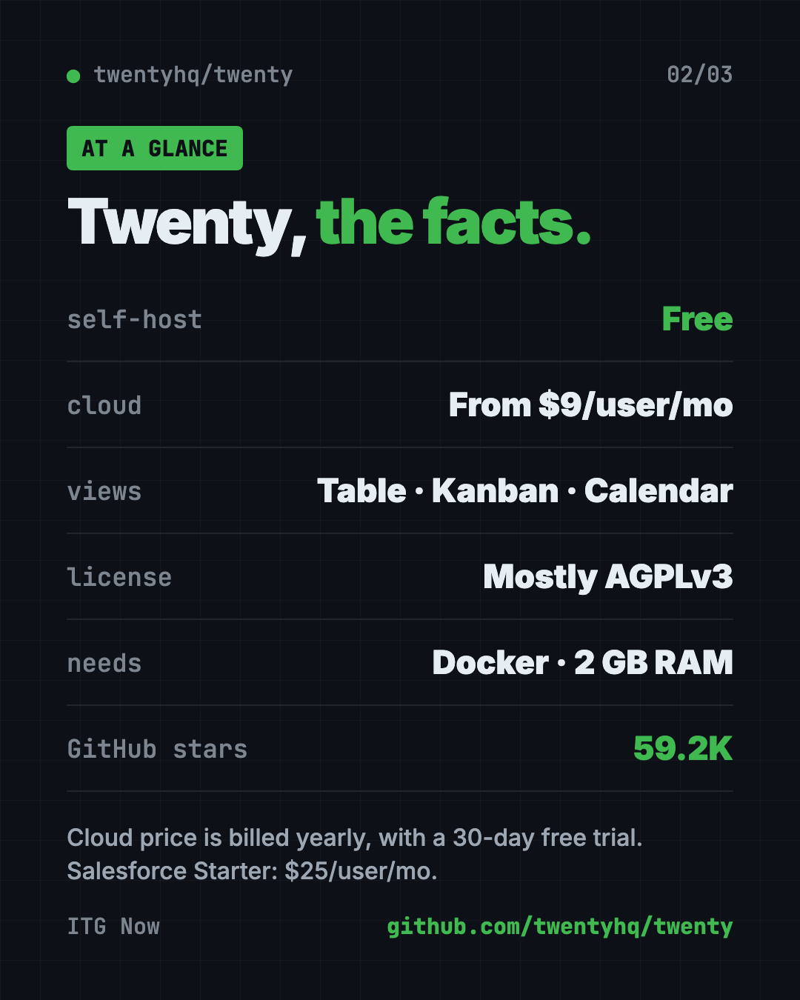
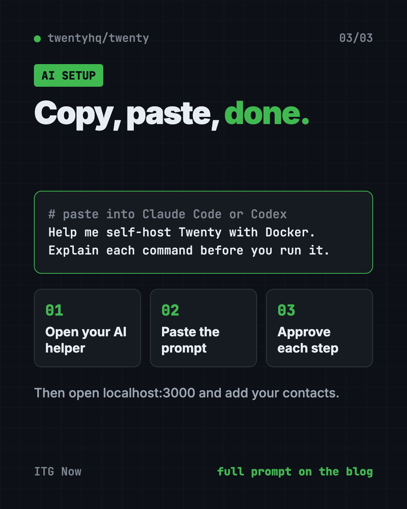

Twenty: Free Salesforce Alternative, Open Source CRM (2026)
- Published 22 Oct 2026
- 9 min read
- License AGPLv3 core, some MIT packages, some commercial files
- By the ITG Now team
Twenty is a free Salesforce alternative: an open source CRM you can run on your own server at no cost. A CRM is the app a business uses to keep track of customers, deals and every email and meeting with them.
We'll show you what Twenty does, how teams use it, what it'll cost you, and how you can set it up yourself or with an AI helper.
See all free alternatives to Salesforce
Key takeaways
- Free to self-host. Twenty's site says you can "self-host the open source core for free."
- Or use their cloud. Paid plans start at $9 per user per month (billed yearly), with a 30-day free trial.
- Built for sales teams. Contacts, deals, emails, meetings, workflows and dashboards in one place.
- Very popular. About 59.2K stars on GitHub. Stars work like bookmarks.
- One catch: hosting it yourself needs Docker and a bit of terminal work.

What is Twenty?
Twenty is a CRM (customer relationship manager). Think of it as one shared notebook your whole team uses for every customer you've got.
On GitHub it calls itself "the open alternative to Salesforce, designed for AI." Its README (the project's main instructions page) calls it "The #1 Open-Source CRM." That's the makers' own claim.
You can bend it to fit how your business works. Add your own fields, build your own views, and set up automations you'd otherwise do by hand. Developers can even define new parts of it as code.
The newest release, v2.50.0, came out on October 21, 2026. It's a busy project, and the code gets new changes almost every day.
How to use Twenty (real examples)
- Track your sales pipeline. Put each deal on a Kanban board, grouped by stage. Drag the card along as the deal moves.
- Move off spreadsheets. Import your customer list from a CSV file (a simple spreadsheet export). Now everyone sees the same list.
- Keep emails and meetings together. Twenty can pull your team's emails and meetings into one place, next to each customer.
- Automate the boring steps. Use workflows to run tasks for you and connect to your other tools.
- See how sales are going. Dashboards give you live numbers on your team's progress.
The docs also list a Calendar view, which shows records by date. Handy for planning follow-ups.
💡 Tip: Start with one simple pipeline, like "New, Talking, Won, Lost." You can add more fields once your team is used to it.
Is Twenty really free?
Yes, if you host it yourself. The open source core costs you nothing on your own computer or server. You'll only pay for the server, if you rent one.
If you'd rather not manage a server, Twenty sells a cloud version. On its pricing page (checked October 22, 2026):
- Pro: $9 per user per month, billed yearly.
- Organization: $19 per user per month, billed yearly.
- Enterprise: from $50k per year.
The cloud has a 30-day free trial, and you don't need a credit card to start.
For comparison, Salesforce's Starter Suite is $25 per user per month, and its Pro Suite is $100 per user per month billed yearly (Salesforce pricing page, checked October 22, 2026). Salesforce also lists a Free Suite at $0.
What license does Twenty use?
It isn't one simple license, so here's what we found. The LICENSE file says the project is "mostly licensed" under AGPLv3, with two exceptions:
- Some files use a commercial license. They are marked
@license Enterpriseat the top. - Some packages use MIT. That includes the developer toolkit (the twenty CLI and SDKs), the twenty-ui library, and the sample apps.
AGPLv3 is an open source license. If you change Twenty and let people use your changed version over the internet, you must share your changes. The license also has an extra permission: apps you build on top of Twenty's APIs can use any license you like.
⚠️ Heads up: If your company plans to change Twenty's code and offer it to others, read the LICENSE file first, or ask a lawyer.
Twenty at a glance
| Price | Free to self-host. Cloud from $9 per user per month (yearly) |
| Works offline | No, it's a web app. Self-hosted, it runs on your own server |
| Platforms | Any web browser. Self-host with Docker |
| License | Mostly AGPLv3, some MIT packages, some commercial files |
| Latest version | v2.50.0 (October 21, 2026) |
| Views | Table, Kanban, Calendar |
| Best for | Small teams that want a free Salesforce alternative they control |

Who should use Twenty?
- Small businesses that find Salesforce too pricey or too big.
- Sales and marketing teams who want deals, contacts and emails in one place.
- Startups that want a CRM they can grow and change over time.
- Developers and tech teams who want to build custom CRM parts as code.
- Privacy-minded companies that want customer data on their own server.
If you're one person with ten clients, your simple spreadsheet may still be enough. That's fine.
How to install Twenty
You have two choices.
The easy way: the cloud. Sign up at twenty.com. The README says you can "spin up a workspace in under a minute," with nothing to install.
The free way: host it yourself. These steps come from Twenty's Docker Compose guide. Docker is a free tool that runs apps in neat, sealed boxes. You need Docker and Docker Compose installed, and at least 2 GB of memory (RAM).
Open Terminal (Mac or Linux). Copy and paste this:
bash <(curl -sL https://raw.githubusercontent.com/twentyhq/twenty/main/packages/twenty-docker/scripts/install.sh)
That one line installs the latest stable version. When it's done, open this address in your browser:
http://localhost:3000
Then you'll create your account and import your contacts from a CSV file.
⚠️ Heads up: The setup creates a secret called ENCRYPTION_KEY. The docs warn that losing it means losing access to all secrets stored in the database. Save it somewhere safe.
Prefer the manual steps?
The docs also give a step-by-step way. First get the settings file. Copy and paste this:
curl -o .env https://raw.githubusercontent.com/twentyhq/twenty/refs/heads/main/packages/twenty-docker/.env.example
Make an encryption key and a database password, then put them in the .env file as ENCRYPTION_KEY and PG_DATABASE_PASSWORD. Copy and paste this:
openssl rand -base64 32
openssl rand -hex 32
Get the Compose file and start Twenty. Copy and paste this:
curl -o docker-compose.yml https://raw.githubusercontent.com/twentyhq/twenty/refs/heads/main/packages/twenty-docker/docker-compose.yml
docker compose up -d
The docs say not to use special characters like @, /, # or % in the database password. They break the connection.
Let Claude or Codex set it up for you
Claude Code and OpenAI Codex are AI helpers that can run setup steps on your computer for you. You paste a request, it does the steps, and you approve each one.
Copy and paste this:
Please help me self-host Twenty, the open source CRM, with Docker.
1. Check if Docker and Docker Compose are installed and up to date. If not, help me install them.
2. Check that my computer or server has at least 2 GB of RAM.
3. Follow the official guide at docs.twenty.com/developers/self-host/capabilities/docker-compose.
4. Tell me what each command does before you run it.
5. Show me where my ENCRYPTION_KEY is saved so I can back it up.
6. Open http://localhost:3000 when it's running.
Then try asking:
Twenty is running. Help me turn my customer spreadsheet into a CSV file I can import.
Help me set SERVER_URL in Twenty's .env file so my team can reach it from their computers.
Explain Twenty's license in plain words. Can my company use it for free?
Twenty also offers official "app skills" for coding agents like Claude Code and Codex. These help a developer build custom Twenty apps.

⚠️ Heads up: Only say yes to steps you understand. If a command looks odd, ask "what does this do?" before you approve it.
What are Twenty's limits?
- Self-hosting takes some tech skill. You need Docker, a terminal, and someone to keep the server running and backed up.
- It needs memory. The docs ask for at least 2 GB of RAM. With less, parts of it can crash.
- The license is mixed. Most of it is AGPLv3, but some files are under a commercial license.
- The cloud costs money after the trial. Free only applies when you host it yourself.
- No offline mode. It's a web app, so your team needs a connection to the server.
Our take
Twenty is one of the most popular open source CRMs on GitHub. If Salesforce feels too big and too pricey for you, we think it's worth a look. You don't lose much by trying the free trial first.
What we like:
- Free to self-host, and your customer data stays on your server.
- A low-cost cloud option if you don't want to host it.
- Table, Kanban and Calendar views cover most sales work.
- Workflows, dashboards and AI agents are built in.
- Very active project, with a new release on October 21, 2026.
What to watch for:
- Self-hosting means you're the one handling updates and backups.
- The license isn't simple MIT. Read it if you plan to change the code.
- If your team's moving from Salesforce, you'll need time to move your data over.
Want more free tools for your business? Try OpenSEO, a free Semrush alternative. Running a team of AI helpers? Read our Paperclip guide. Need a private research notebook? See Open Notebook.
FAQ
Is Twenty CRM free?
Yes, when you host it yourself. Twenty's cloud version is paid, starting at $9 per user per month billed yearly, with a 30-day free trial.
Is Twenty a good Salesforce alternative?
For small and mid-size teams, it covers the basics: contacts, deals, emails, meetings, workflows and dashboards. It calls itself "the open alternative to Salesforce."
Is Twenty open source?
Mostly. The core uses the AGPLv3 open source license, some packages use MIT, and some files marked "Enterprise" use a commercial license.
How do I install Twenty?
Sign up at twenty.com for the cloud version. Or self-host with Docker using the one-line install script from docs.twenty.com.
What do I need to self-host Twenty?
Docker, Docker Compose and at least 2 GB of RAM. A server or a spare computer works.
Can I import my contacts into Twenty?
Yes. The docs say you can import and export your data with CSV files or the API.
Get Twenty: github.com/twentyhq/twenty
More free notes and productivity tools
- Tolaria Tolaria is a free offline notes app for Mac, Windows and Linux. Your notes are plain files you own, with full version history and no account.
- Odysseus Odysseus is a free self-hosted AI workspace for chat, deep research, documents, email, notes and calendar. You run it yourself, so your data stays with you.
- Project NOMAD Project NOMAD is a free offline knowledge server with Wikipedia, medical guides, Khan Academy courses, maps and a local AI that work with no internet.
Latest AI news
- Meta gives away its big Muse Spark AI for free
- Anthropic's legal tech push hits a reality check
- Microsoft says China-state group used AI hacking tool
- Barclays to cut 5,000 jobs this year, citing AI
Keep reading

VoiceStudio: Free ElevenLabs Alternative
VoiceStudio is a free ElevenLabs alternative. Clone a voice, dub videos and turn text into speech on your own Mac, Windows or Linux computer.